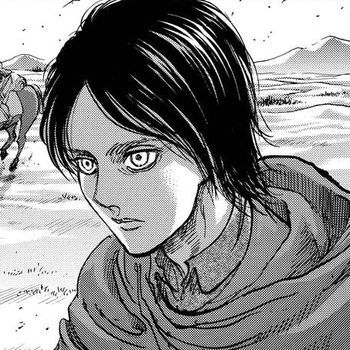
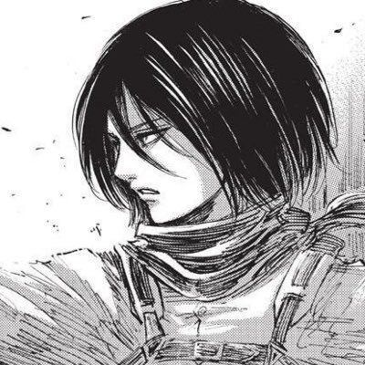
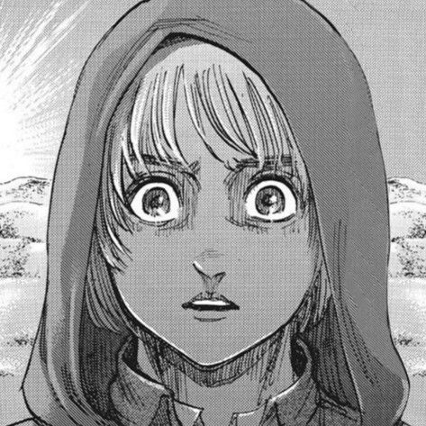
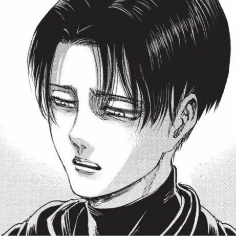
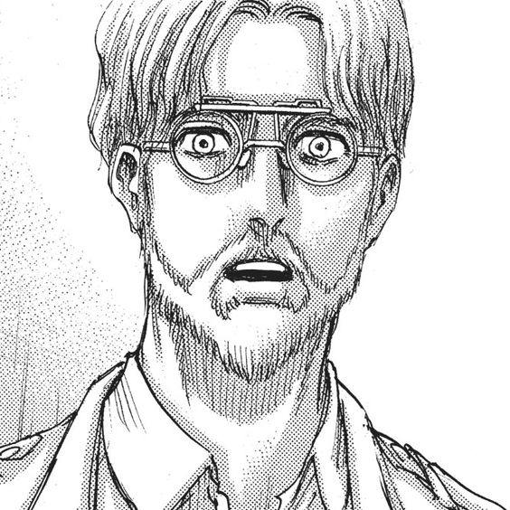
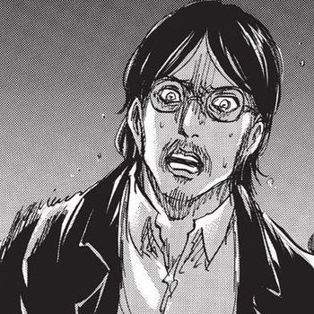

Personajes
Aquí encontraras algunos de los protagonistas de la obra con su biografia
Eren Jeager

Eren Jaeger es el protagonista principal de la serie. Es el único hijo de Grisha y Carla Jaeger. A su vez, es el medio hermano menor de Zeke Jaeger, el hermano adoptivo de Mikasa Ackerman y un Titán Cambiante, siendo el último portador del Titán de Ataque, el Titán Fundador y el Titán Martillo de Guerra. Eren es oriundo del Distrito Shiganshina, una ciudad situada en el exterior de la Muralla María.
Junto con su hermana adoptiva Mikasa Ackerman y su mejor amigo Armin Arlert, deciden entrar en la milicia. Tras haber presenciado la aniquilación de su pueblo y la muerte de su madre a manos de los titanes. Permanece en él una venganza personal hacia los titanes, siendo su objetivo la eliminación de todos y cada uno de ellos debido a que mataron a su madre.
Tras haber encontrado los secretos ocultos en el sótano de su padre, Eren se enteró del origen de los titanes y de la verdadera historia del mundo, descubriendo de esa forma que su verdadero enemigo es en realidad el hombre. Desde aquel entonces, Eren tomó el objetivo de eliminar a aquella amenaza para finalmente poder hallar la libertad.
Mikasa Ackerman
Mikasa Ackerman es la hermana adoptiva de Eren Jaeger. Le debe mucho a él, desde que la salvó de los secuestradores que pretendían convertirla en esclava, y pasa la mayor parte de su tiempo juntos. Así pues, aunque a veces no esté de acuerdo con lo que hace, pero lo protege de cualquiera que trate de hacerle daño. Ella, junto con Armin, se une al Cuerpo de Exploración para ayudar a Eren a retomar la Muralla María. La consideran un genio militar y fue la primera de su clase durante la graduación de la Tropa de Reclutas Nº104.
Armin Arlert
Armin Arlert es el 15° y último comandante del Cuerpo de Exploración luego de ser nombrado por Hange Zoë poco antes de su muerte. Es un amigo de la infancia de Eren Jaeger y Mikasa Ackerman . Aunque físicamente es más débil que el resto de sus compañeros, demuestra una gran inteligencia a través de su capacidad estratégica y soluciones rápidas. Durante la batalla para retomar el Muro María, Armin es quemado casi hasta la muerte por el vapor emitido por Bertolt Hoover en su forma de Titán Colosal. Para salvarlo, fue necesario inyectarlo con el suero y hacerlo comer al propio Bertolt, convirtiéndose en el proceso, en un Titán Cambiante. Sin embargo, perdió esta habilidad cuando el poder de los titanes dejó de existir tras la muerte de Eren.
Levi Ackerman
Levi Ackerman, también referido como Capitán Levi, es el capitán de escuadrón de operaciones especiales del Cuerpo de Exploración, y es conocido como "el soldado más fuerte de la humanidad". Es una persona de baja estatura y físico delgado pero flexible, siendo esto una ventaja al momento de utilizar el Equipo de Maniobras Tridimensional, permitiéndole tener más rapidez y agilidad. Su cabello es negro, corto y liso, manteniendo rapadas las sienes y la nuca (al igual que muchos personajes masculinos). Sus ojos son pequeños, finos y de color gris azulado. Se caracteriza por su permanente expresión escéptica, la cual parece ser inalterable. Se le ha visto frecuentemente usando el uniforme estándar militar, que en las expediciones está debajo de la capa verde del Cuerpo de Exploración. Cuando se vio en la obligación de tomar reposo debido a su lesión en el tobillo, vestía con un traje negro y una corbata. Particularmente usa un atuendo casual que consiste en una camisa verde y unos pantalones de mezclilla. Perdió su ojo derecho y tres dedos de su mano izquierda luego de haber recibido una explosión a quemarropa provocada por Zeke Jaeger con una Lanza Relámpago, con el cual también le dejó una cicatriz que va desde la barbilla hasta la frente en la parte derecha del rostro.
Zeke Jeager
Zeke Jaeger fue el Jefe de Guerra de la unidad de los guerreros eldianos de Marley y último poseedor del poder del Titán Bestia. Hijo de Grisha y Dina Jaeger, además de ser medio hermano mayor de Eren Jaeger, Zeke fue uno de los últimos descendientes de la familia real Fritz. Durante la mayor parte de su vida, Zeke demostró una profunda lealtad a Marley, habiendo entregado a sus propios padres a las Autoridades de Seguridad Pública luego de que estos lo infiltraran en el programa de guerreros con el propósito de obtener al Titán Fundador para los Restauradores de Eldia. Sin embargo, su verdadera intención era conseguir dicho poder para extinguir a la Gente de Ymir por medio de una esterilización masiva y así liberar a la humanidad del terror que representan los titanes. En secreto, formó un grupo de Voluntarios Anti-Marleyanos para ganarse la confianza de los Militares y formar una alianza con su medio hermano.
Grisha Jeager
Grisha Jaeger fue un médico eldiano, nacido en una zona de internamiento en Liberio en Marley, y un miembro de los Restauradores de Eldia. Después de ser acusado de traición por el Gobierno de Marley, Grisha y sus compañeros Restauradores de Eldia fueron condenados a ser transformados en titanes sin inteligencia, que vagarían por Paradis eternamente. Grisha fue salvado de este destino por Eren Kruger, quien le entregó sus poderes de titán y le encargó la misión de recuperar el poder del Titán Fundador. Grisha Jaeger, ahora un Titán Cambiante, llegó a las murallas, donde fue encontrado por Keith Shadis. A partir de ese momento, empezó a vivir en el Distrito Shiganshina, ganándose la confianza de los ciudadanos después de salvar la ciudad de una plaga. De su primer matrimonio con Dina Jaeger, Grisha tuvo un hijo, Zeke Jaeger. Una vez fue enviado a la isla Paradis, Grisha se casó nuevamente, esta vez con Carla Jaeger, y tuvo un segundo hijo, Eren Jaeger. Además, adoptó a Mikasa Ackerman en el año 844.